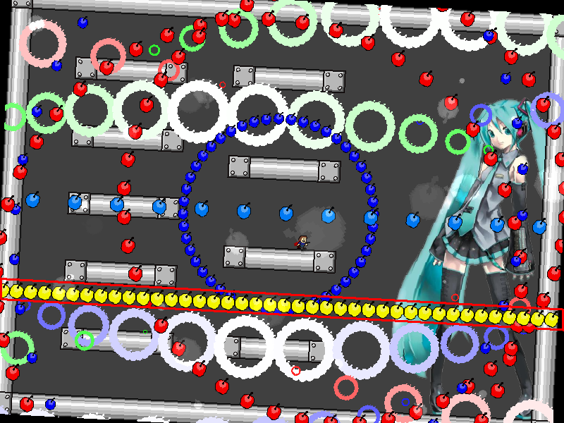
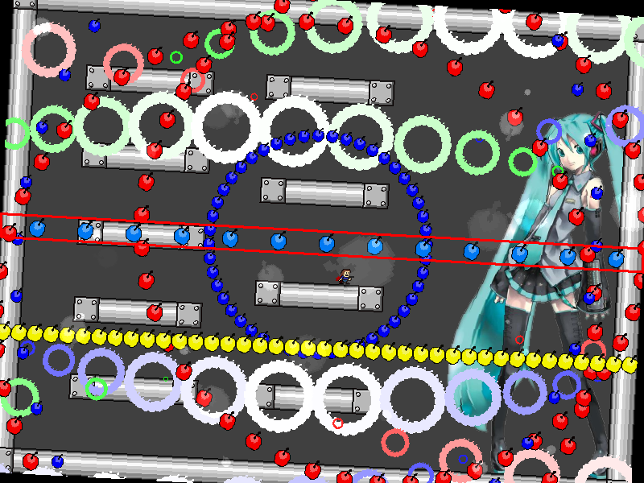
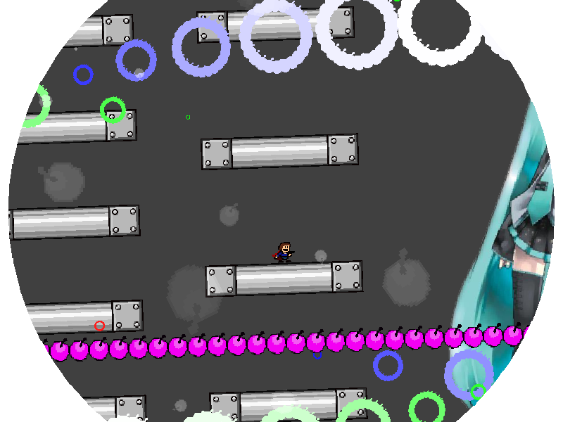
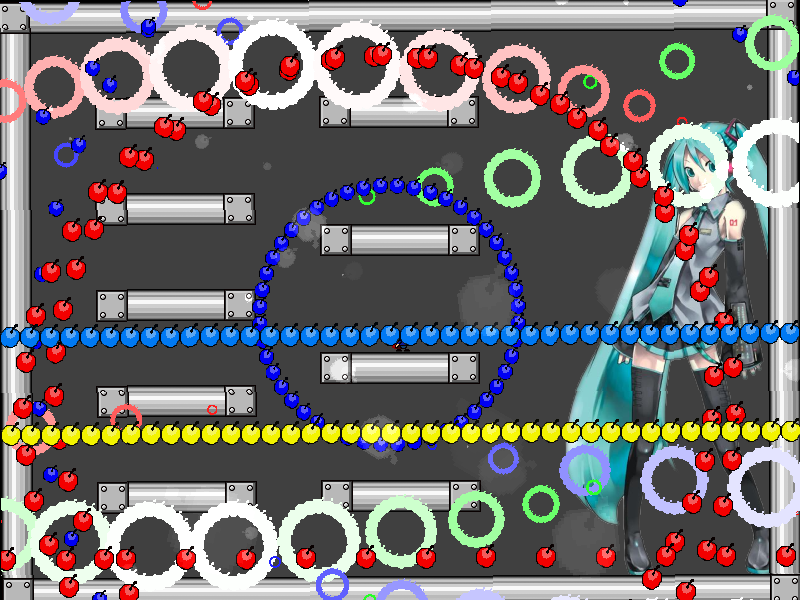
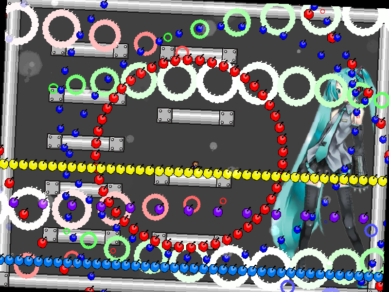
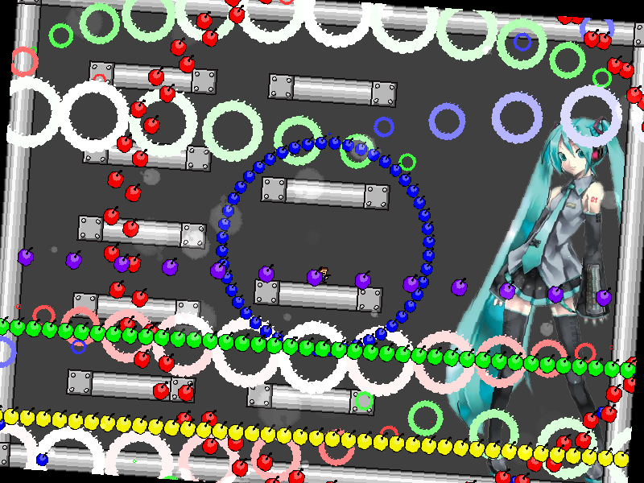

chapter8 - section3
| creator | segment | label | jump |
|---|---|---|---|
| NN | 1:43.90~1:47.30 | R/Q | double |
反復型の弾幕です。
画面下部に周期的に生成される棒状弾幕に関して、これらは生成から21step経過後（次の棒状弾幕が生成される瞬間）に、その時点のプレイヤーの位置を基準とした速さと重力を伴って鉛直上向きに発射されます。
生成された棒状弾幕の状態が密（fig.8-3.1.a）であるか疎（fig.8-3.1.b）であるかを発射されるまでの間に判断し、それぞれの場合に対応する適切な回避行動をとる必要があります。
なお、密状態の棒状弾幕が3回以上連続して生成されることはなく、疎状態の棒状弾幕が生成された次は必ず密状態の棒状弾幕が生成されます。


また、8-3開始時点では必ず密状態の棒状弾幕が生成されます（fig.8-3.2）。

発射時の速さと重力を決定する上で参照される位置に関して、これらはそれぞれの棒状弾幕について1回前に生成された棒状弾幕の状態により異なります。
具体的には、疎→密の順番で生成される場合を(i)、密→密の順番で生成される場合を(ii)、密→疎の順番で生成される場合を(iii)として、それぞれの場合における放物線運動の頂点にあたる座標が
(i) : プレイヤーに対して10ドット上（fig.8-3.3.a）
(ii) : プレイヤーに対して10ドット下（fig.8-3.3.b）
(iii) : プレイヤーと同じ高さ（fig.8-3.3.c）
となっており、特に(i)と(ii)の場合に関して回避に最低限要するジャンプの高さが異なっていることに注意が必要です。
なお、初期状態（fig.8-3.2）については便宜的に(i)として扱われます。



1:46.70において画面中央を中心として画面外側から出現する星型弾幕（fig.8-3.4）については、各時刻において中心からみたプレイヤーの角度に対して最も開いた形状をとります。